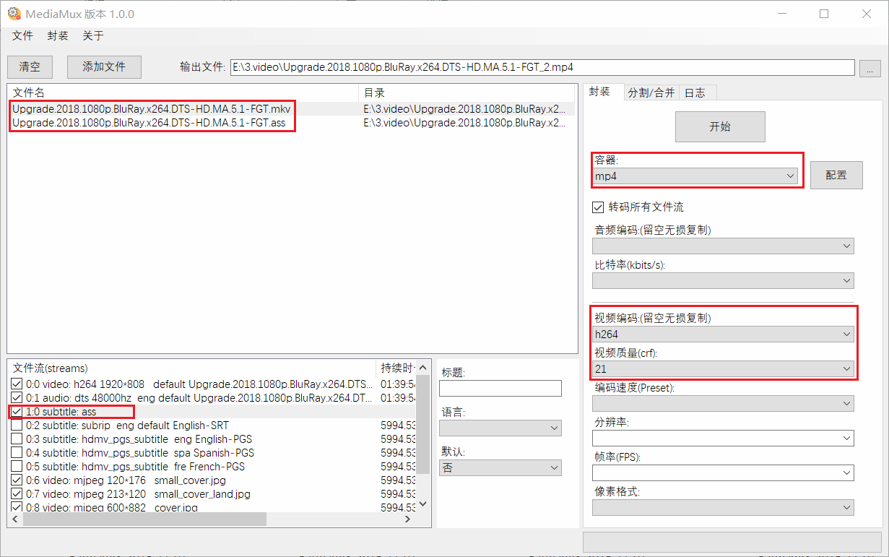
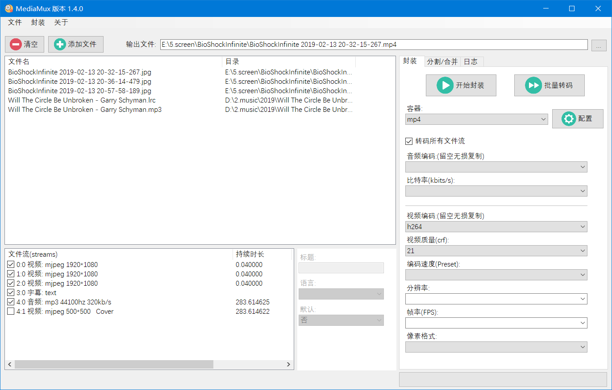
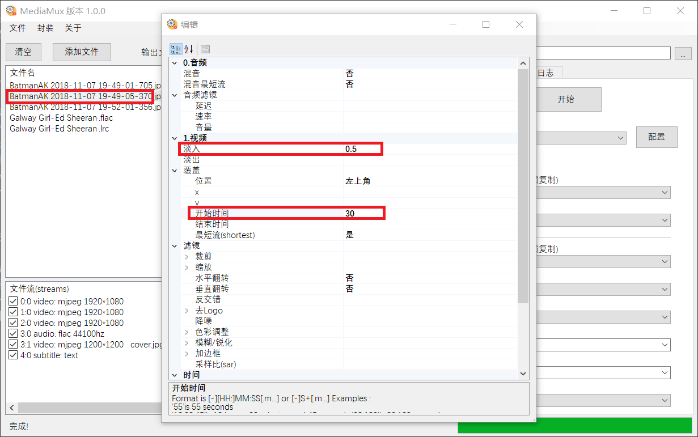
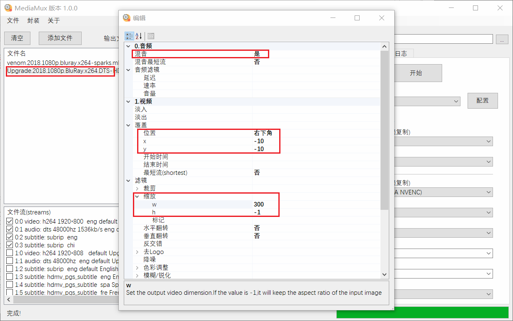

‘開始封裝’與‘批量轉碼’的區別？
如何壓制10bit視頻？
_nvenc編碼報錯？
如何替換升級FFmpeg版本？
如何內封(burn in)字幕
如何製作幻燈片視頻
如何制作畫中畫
‘開始封裝’與‘批量轉碼’的區別？
‘開始封裝’會將檔清單中的所有視頻，音訊或字幕全部封裝為一個檔（內含多個軌道）。
‘批量轉碼’則是針對每個檔分別進行編碼並輸出。
如何壓制10bit視頻？
圖元格式選擇：yuv420p10le
_nvenc編碼報錯？
先確保自己的顯卡是英偉達
如果出現"Driver does not support the required nvenc API version. "錯誤, 請升級顯卡驅動至最新版本.
只有10xx系列以上顯卡才支援10bit編碼, 9xx系顯卡不支援.
如何替換升級FFmpeg版本？
為保證相容性並未使用最新版ffmpeg, 如有需要可以手動替換內置的ffmpeg.
下載你想要的ffmpeg版本：
64位： https://ffmpeg.zeranoe.com/builds/win64/shared/
32位：https://ffmpeg.zeranoe.com/builds/win32/shared/
解壓後將bin目錄裡的所有檔複製替換到MediaMux/ffmpeg目錄裡即可。
如何內封(burn in)字幕
如下圖所示, 添加待封裝的視頻與字幕檔.
在左下角的檔流裡將不需要的字幕取消掉, 或者拖動字幕到最上方(默認只壓入第一個選中的文本或圖形字幕).
設置容器為mp4.
設置視頻編碼 (如果不設置編碼, 文本字幕將被軟壓入mp4, 由於mp4格式只支持內嵌純文字字幕, 所以圖形字幕將被忽略)
開始封裝, OK.

如何製作幻燈片視頻
先將待製作的圖片全部修剪到同樣大小.
將所有圖片, 音訊檔與字幕拖入檔框, 選擇編碼參數, 注意一定要添加一個音訊檔, 否則編碼將無限迴圈(沒有音訊可以設置圖片檔的持續時長):

很多音樂檔裡都包含有專輯圖片cover, 像上面這種, 需要把它取消掉
從第二張圖片開始, 右鍵(或快速鍵F2)編輯檔參數, 設置'覆蓋'屬性裡的開始時間: 30秒, 淡入時間: 0.5秒

設置第三張圖片, 開始時間: 1:0分鐘, 淡入時間:0.5秒
依次類推......
開始封裝, OK. 最終效果就是每隔30秒做淡入切換的幻燈片視頻.
如何制作畫中畫
將一個視頻(或圖片)嵌入另一個視頻. 和幻燈片一樣同樣是設置'覆蓋'屬性.
右鍵編輯需要覆蓋的視頻, 設置覆蓋位置, x,y座標(可以為負值表示相反方向移動), 縮放大小等等.
如果同時需要畫中畫的音訊的話, 也可以將'混音'屬性選上.(同時需要設置音訊編碼參數)

以上表示將Upgrade.mkv縮放覆蓋到venom.mkv的右下角, 邊距10圖元, 縮放300:-1 , 表示寬度300圖元, 高度自我調整.(當視頻或音訊設置'覆蓋'或'混音'屬性時,
左下角的檔流會被自動取消選擇,
否則的話這個視頻或音訊將被做為第二軌道封裝.)